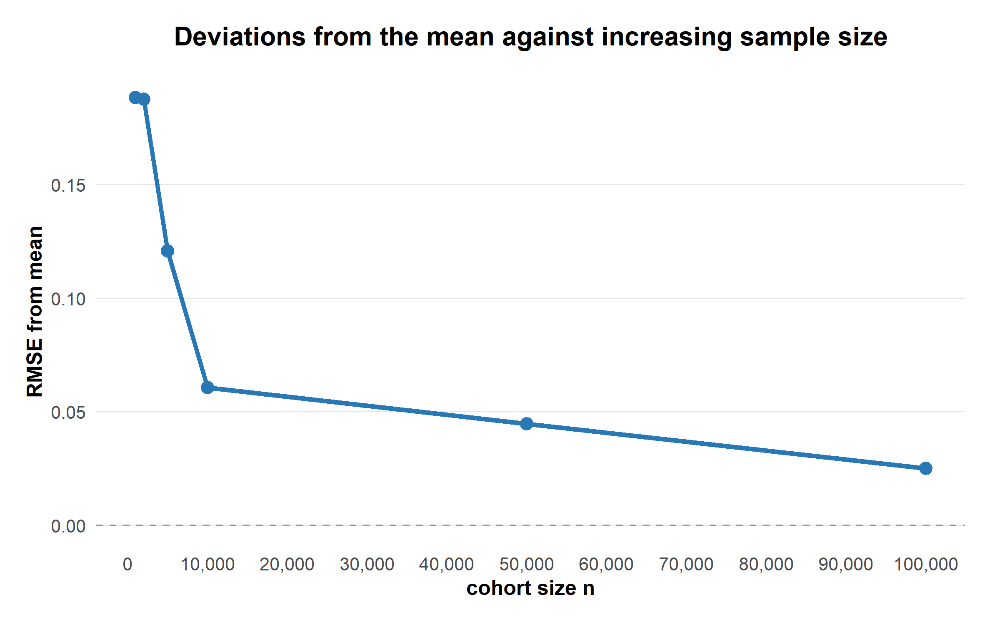

rTMLE simulation study
An investigation of the bias in estimation of treatment-specific risks
1. Introduction
This study investigates the performance of a longitudinal targeted maximum likelihood estimation (rTMLE) implemented in R on simulated cohorts. The primary objective is to evaluate the bias of this model, compared to the true* risk, in increasingly complicated reference scenarios. The hope is to recreate and validate models performance on LEADER-like data.
2. Methods
2.1. Data-generating mechanism
Setting (variables, events and their distributions), Hooks, simulate_cohort. Maybe start everything with leader like just no
2.2. Evaluating true* risk (TR)
Large cohort. Maybe RMSE from mean for increasing sample size is a good plot here (should just be necessary for one t0).

Similarly if we change the reference to a different time.
2.3. Performance measures
For an estimator \(\hat{\theta}\) and true parameter \(\theta\), the bias is defined as
\[ \operatorname{Bias}(\hat{\theta}) = \frac{E[\hat{\theta}] - \theta}{\theta}. \]
RMSE from the same definitions etc. Think makes sense to normaliz both cases.
\[ RMSE = \sqrt(\frac{1}{N} \sum_{n} (E_{n}[\hat{\theta}] - \theta)^2) \]
3. Simulation results
3.1. Minimal setting
The minimal simulation setting includes randomized treatment assignment (lira or placebo), an absorbing outcome (death), and no effects further effects.

3.2. Interactive comparison
The figure below allows inspection of estimates across simulation settings.
4. Additional analyses
5. Discussion
Interpretation of the simulation results.
6. Conclusions
Summary of the main findings.